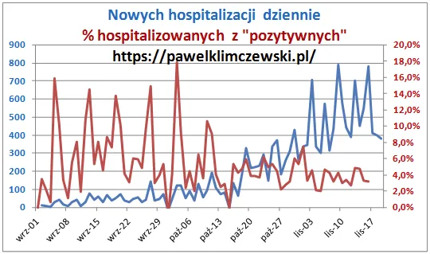
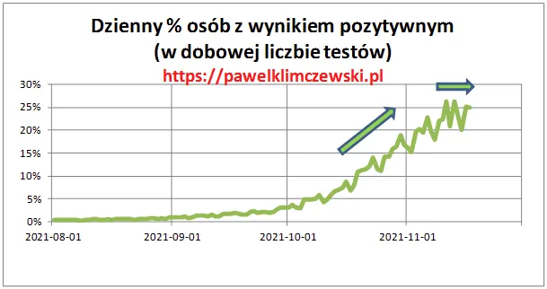
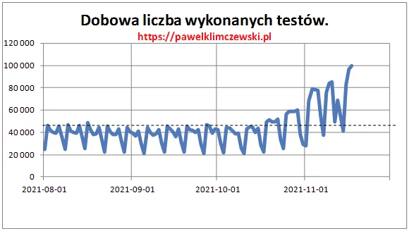
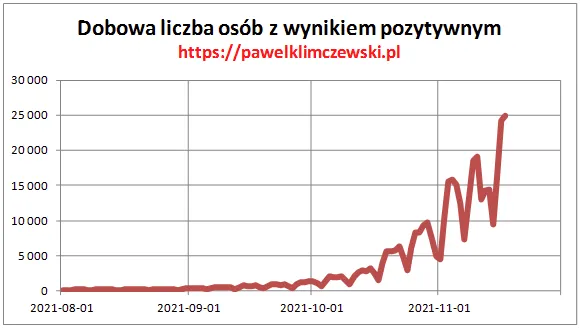
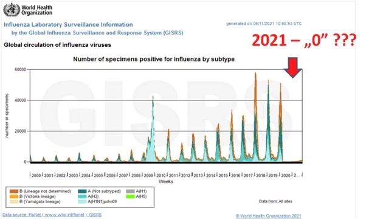

Strachy na lachy
Nie mamy w Polsce setek zgonów dziennie, a ponad 1500 !
Wbrew prasowej narracji, nie mamy w Polsce setek zgonów dziennie, tylko obecnie około 1500, z czego w ostatnim tygodniu średnio dziennie 71 zmarłych "Na covid". Wczoraj pisałem o tym, że poziom zgonów sezonowych jest blisko 40% wyższy od normy wieloletniej a zgony "Na covid" to tylko 5,7%.

Z braku naturalnych powodów do obaw Ministerstwo Strachu podnosi liczbę testowanych do blisko 100 000. Ćwiczyliśmy ten wariant rok temu w sierpniu. Cokolwiek bada ten test od tygodnia procent "plusów" ustabilizował się na poziomie 25% i oczywiście podwójna liczba testów da dwa razy więcej "zakażonych", ale odsetek wśród badanych jest taki sam, co oznacza, że w populacji mamy od tygodnia taka samą liczbę "zakażeń", co potwierdza spadek liczby nowych hospitalizowanych. Radykalny spadek procenta hospitalizacji w liczbie "plusów" świadczy, że mamy duży wzrost bezobjawowców lub chorych, jak co roku nadających się do łóżka a nie do szpitala.
Mamy sezon grypowy i liczba osób trafiająca do "służby zdrowa" rośnie. Skutki tego widać na wykresach poniżej.



We wcześniejszych opracowaniach wskazywałem na całkowity "zanik" grypy w statystykach WHO od zeszłego roku. Wystarczy cofnąć się do danych z 2017 roku, gdzie silna grypa zabijała w Polsce dziennie nawet kilkaset osób, aby zrozumieć, że nie mamy obecnie czegoś nadzwyczajnego. Niestety stres u osób najstarszych i utrudniony dostęp do służby zdrowa od marca 2020 będą czynnikami wzrostu śmiertelności w nadchodzących miesiącach.

Paweł Klimczewski